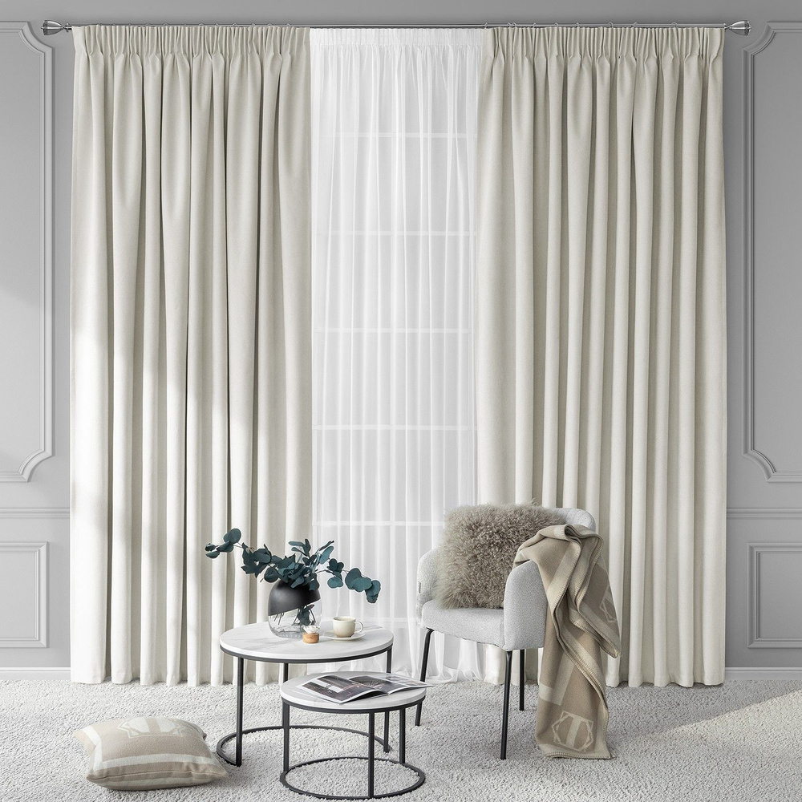

Шторы
Главная | День-ночь | Блэкаут | С фотопечатью | Плиссе | Жалюзи | Римские шторы | Шторы | Карнизы
В современных бизнес-интерьерах дизайн окон перестал быть второстепенной задачей. Сегодня шторы — это многофункциональный инструмент, который помогает выстраивать рабочие процессы, транслировать ценности бренда и заботиться о комфорте команды. Грамотно оформленное окно в офисе или переговорной — это показатель профессионализма компании и её внимательного отношения к деталям.
Световой и акустический контроль
Основа офисного комфорта — это управление средой. Качественные оконные системы позволяют гибко регулировать уровень естественного освещения, устраняя раздражающие блики на мониторах и поддерживая оптимальную температуру в помещении. Это не только снижает утомляемость сотрудников, но и напрямую влияет на их работоспособность.

Не менее важна и звукоизоляция. Текстиль с плотной структурой эффективно поглощает лишние шумы, что критически важно для open-space пространств и зон для переговоров. Снижение уровня эха помогает создать спокойную обстановку, способствующую концентрации и продуктивному общению.
Имиджевая составляющая
Оформление окон — это часть визуальной коммуникации бренда. Текстиль должен поддерживать общую стилистику офиса, подчеркивая статус компании. Инвестируя в качественные и эстетичные решения, бизнес создает пространство, в котором приятно находиться и сотрудникам, и партнерам, что в конечном итоге работает на укрепление деловой репутации.